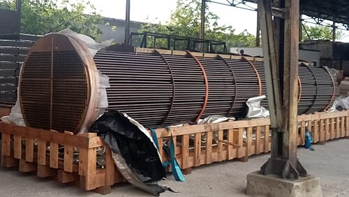
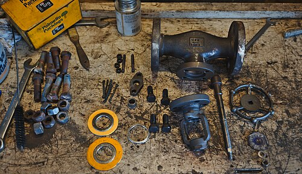
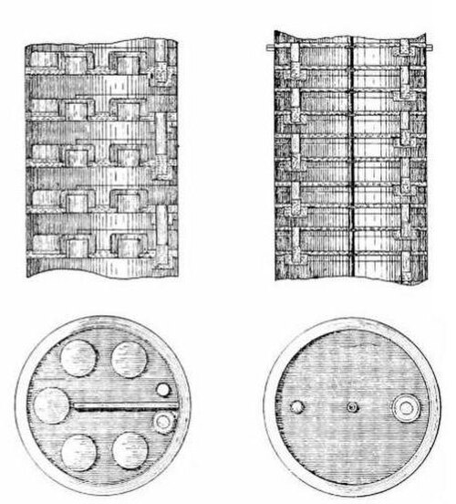
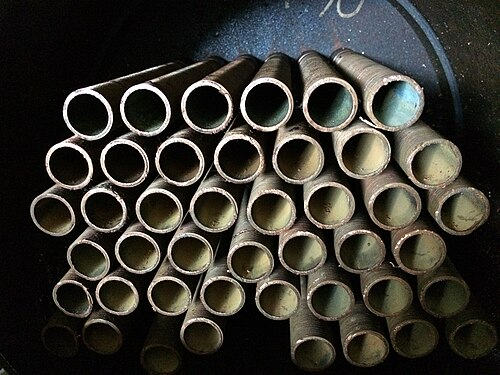

Pentane / hexane / heptane column · flooded condenser below the reflux drumLoading the simulation engine…
Theory
Introduction
This page operates a distillation column separating a liquid feed of
n-pentane, n-hexane, and n-heptane. Pentane is the light key (the
component concentrated overhead), heptane is the heavy key (the
component concentrated in the bottoms), and hexane is the middle
component. The column has 12 trays (a tray is one equilibrium stage:
liquid and vapour leaving it are taken to be in equilibrium), the feed
enters on tray 6, and the nominal feed rate F (molar feed flow,
in mol/s) is 10 mol/s with feed mole fractions 0.40 pentane, 0.30
hexane, 0.30 heptane. The nominal column pressure P (absolute
pressure, in kPa) is 150 kPa; the playable range is 100 kPa to
300 kPa.
Beyond this game, the separation matters because distillation is the default industrial method for separating liquid mixtures whose
components boil at different temperatures, and its operating cost is
dominated by the heat supplied at the reboiler and removed at the condenser. Every control action in the game —
opening a valve, warming the cooling water, raising the pressure —
moves product purity and energy use together, through the relations
set out below.
The key points rest on four terms. Relative volatility is the ratio of two components'
equilibrium ratios: the larger it is, the more each tray enriches the
vapour in the lighter component (see
Relative volatility). Flooding, in this
plant, is the pooling of condensate in the condenser: liquid pooled
over the lower tubes leaves less area exposed for condensing (see
Flooded-condenser pressure control). A
liquid is subcooled when its temperature is below its bubble point at
the pressure it is about to enter; a liquid that is not subcooled
partly flashes to vapour when the pressure drops (see
Riser lift). Boilup is the vapour flow
generated in the reboiler (see
Stages and constant molal overflow).
Key points the game demonstrates:
Separation per tray is set by the relative volatility, which decreases as pressure rises, so the same column separates less well at high
pressure (see Relative volatility; try it
in the Pressure control unit).
The condenser in this plant is also the pressure-control device:
how flooded it runs sets how much condensing area is exposed (see
Flooded-condenser pressure control; try
it in the Condenser unit).
Condensate reaches the drum only if the condenser-to-drum pressure
difference beats the riser lift head, and only without flashing if the
liquid is subcooled (see Riser lift; try
it in the Riser and reflux drum unit).
Two valves in series behave in two different ways: the condenser
pair are passive throttles sharing one pressure drop, while the steam
regulator holds a fixed pressure upstream of the steam valve, so the
chest pressure follows the balance of steam in and steam condensed
(see Valve law; try it in the
Valves unit).
Steam supplies the boilup: the reboiler duty follows the steam
chest saturation temperature, which follows the chest pressure (see
Boilup and the steam chest).
Pressures are absolute unless a pressure difference is stated.
Vapour–liquid equilibrium
On each tray, liquid of mole fractions xi
(mole fraction of component i in the liquid, dimensionless)
sits in contact with vapour of mole fractions yi
(mole fraction of component i in the vapour, dimensionless).
In the model the liquid is an ideal mixture, so Raoult's law applies: the partial pressure of component i in the vapour is
its liquid mole fraction times its pure-component vapour pressure
Pisat(T) (the pressure at which
pure i boils at temperature T, in kPa, with T in
K). Summing over the three components gives the tray pressure:
P = ΣixiPisat(T) (1)
and the vapour composition follows term by term:
yi = xiPisat(T) / P (2)
The equilibrium ratio Ki (dimensionless) collects
the same relation:
Ki = yi / xi = Pisat(T) / P (3)
Pentane has the highest vapour pressure at any temperature in the
operating range, so K for pentane is the largest of the three
and the vapour leaving a tray is always richer in pentane than the
liquid it left. That enrichment, repeated tray by tray, is the whole
mechanism of the separation [3].
On the drawing, the tray composition bands show the gradient. The top tray liquid at the nominal point has pentane mole fraction 0.911; the reboiler liquid has 0.0215. The gradient between them is built by
the per-tray enrichment above.
Antoine relation and bubble point
Pure-component vapour pressure comes from the Antoine relation, with constants Ai, Bi, and Ci fitted per component (dimensionless, in K, and in K respectively, for the form used here):
ln(Pisat / kPa) = Ai − Bi / (T + Ci) (4)
The primary constants are the appendix values recorded in the
model source [2]; an independent constant set from the NIST Chemistry
WebBook [1] is included in the model as a cross-check and agrees with
the primary set to within 0.53 K on the pure boiling points at
101.325 kPa (model values 309.73 K, 342.42 K, and 372.08 K for
pentane, hexane, and heptane; NIST averages 309.2 K, 341.9 K, and
371.6 K).
A liquid mixture boils when the Raoult sum reaches the imposed
pressure. Solving for the temperature at which the first vapour bubble forms gives the bubble point (in K), the temperature solving
ΣixiPisat(T) = P (5)
Each tray temperature in the game is the bubble point of that
tray's liquid at the column pressure. For the feed composition
(0.40, 0.30, 0.30) the bubble point is 328.48 K at 100 kPa, 341.92 K
at 150 kPa, and 367.81 K at 300 kPa, and the first vapour formed at
150 kPa has mole fractions (0.724, 0.200, 0.076): one equilibrium
contact already raises the pentane fraction from 0.40 to 0.72.
Relative volatility and pressure
The relative volatility of component i to component
j, αij (dimensionless), is the ratio of
their equilibrium ratios, and for an ideal mixture the pressure
cancels:
αij = Ki / Kj = Pisat(T) / Pjsat(T) (6)
It still depends on temperature, and the tray temperature rises
with pressure, so relative volatility decreases as pressure rises. At the
feed bubble point:
Pressure (kPa)
Bubble point (K)
α pentane/hexane
α hexane/heptane
α pentane/heptane
100
328.48
2.881
2.767
7.970
150
341.92
2.722
2.611
7.109
300
367.81
2.477
2.373
5.877
Enrichment compounds per stage. At total reflux (all condensate
returned, no products drawn), the pentane-to-hexane proportion in the
liquid is multiplied by about α at each stage, compounding to
αN over N stages, where N is
the number of stages (dimensionless) [3]. For N = 12 and the
pentane/hexane pair,
α12 decreases from 3.27 × 105 at 100 kPa to 5.33 × 104 at 300 kPa — a factor of 0.163. An operating column draws products, so its achieved split is smaller, but it moves
the same way: in the model, at fixed flows, raising the pressure from
100 kPa to 300 kPa moves the distillate pentane mole fraction from
0.977 to 0.945.
Raising the column pressure with the condenser inlet valve moves the distillate pentane reading out of specification (at least 0.95) even though no flow setpoint changed.
The Pressure control exercise practises
recovering from this.
Stages and constant molal overflow
Liquid flows down the column and vapour flows up. Above the feed
tray (the rectifying section) the flows are the reflux flow
LR (liquid molar flow, in mol/s) and the vapour flow
VR (in mol/s). Below the feed tray (the stripping
section) they are LS and VS (both
in mol/s). The distillate flow is D (in mol/s) and the bottoms
flow is B (in mol/s). With a total condenser (all overhead
vapour condensed, no vapour product) and a feed that enters with
vapour fraction ψ (dimensionless; 0 for a liquid feed, 1 for a
vapour feed), the section balances are [3]:
Fig. T1 | A stage enriches the vapour and depletes the liquid. Vapour and liquid enter from the stages below and above, meet on the tray, and leave in equilibrium with each other; the symbols x_i (liquid mole fraction of component i) and y_i (vapour mole fraction of component i) are defined in the Vapour–liquid equilibrium section.
Fig. T2 | The nominal column enriches pentane upward and cools upward. Tray-by-tray liquid composition and temperature at the nominal initial state, computed from the reference model: pentane mole fraction rises from 0.022 in the reboiler to 0.911 on the top tray, and the temperature decreases from 366.12 K to 323.67 K. The step at the feed tray (stage 6, dashed) is the feed joining the traffic.
VR = LR + D (7)
LS = LR + (1 − ψ) F (8)
VS = VR − ψF (9)
B = F − D (10)
At the nominal point (ψ = 0): LR = 5
mol/s, D = 4 mol/s, VR = 9 mol/s,
LS = 15 mol/s, VS = 9 mol/s,
B = 6 mol/s. Boilup is the vapour flow VS: the vapour generated in the reboiler.
Constant molal overflow is assumed in the model: the molar liquid and vapour flows are constant within each section, which follows if every
component has the same molar latent heat and sensible-heat effects
are neglected. For this mixture the assumption is an approximation: the molar latent heats at the normal
boiling points are 25.79 kJ/mol (pentane), 28.85 kJ/mol (hexane), and
31.7 kJ/mol (heptane) [1], a spread of about 20 percent, so the real
flows would drift somewhat from tray to tray. Every stage is also taken to be an equilibrium stage, the column pressure to be uniform (no pressure drop per tray), and each tray to hold a constant 200 mol of liquid. Tray temperatures then run from 366.12 K at the
reboiler to 323.67 K at the top tray at the nominal point, decreasing monotonically as the liquid becomes richer in pentane.
Reflux ratio, level, and split
The reflux ratio R (dimensionless) is the split of drum
liquid between return to the column and product:
R = LR / D (11)
At the nominal point R = 5 / 4 = 1.25. Raising the reflux at
fixed boilup enriches the top stages further (more liquid washing
down against the rising vapour) and lowers the distillate rate.
A separate balance governs the drum level. With Mdrum
the drum holdup (in mol), t time (in s), and
Cdrain the condensate flow arriving from the riser
(in mol/s):
dMdrum/dt = Cdrain − LR − D (12)
Only the sum LR + D appears: the level
cannot tell the two outflows apart. One operator action (say, the reflux valve) can be assigned to the level and the other
(the distillate valve) sets the split — or the reverse — but a single
valve cannot hold the level and set the ratio at once. Purity control with the reflux valve alone leaves the drum level uncontrolled: the drum quietly drains or fills.
The split exercise starts with the reflux valve opened to 75 percent. The drum level decreases while the distillate pentane rises; restore the level with the distillate valve only.
Boilup and the steam chest
Steam condensing in a chest at pressure Pchest (in kPa) heats the reboiler. Steam condenses at its saturation temperature Tsteam (in K), which the
model computes from an integrated Clausius–Clapeyron relation
anchored at 373.15 K and 101.325 kPa with a molar latent heat of
steam of 40.7 kJ/mol; it gives 416.77 K at 400 kPa and 424.84 K at
500 kPa, within about 1 K of the steam tables over the game's range.
The reboiler duty Qreb (heat flow, in W) is
Qreb = UrebAreb (Tsteam − Treb) (13)
where Ureb is the overall heat transfer
coefficient (in W/(m2 K)), Areb is the
reboiler area (in m2), and Treb is the
reboiler liquid temperature (in K). Assumed design values in the model are Ureb = 900 W/(m2 K) and Areb = 12 m2. At the nominal point the
chest pressure is 182.35 kPa, so Tsteam = 390.65 K
against Treb = 366.12 K, and
Qreb = 264.9 kW. From the latent heat, the steam consumption is 6.51 mol/s at the nominal point.
Two consequences matter in play. First, boilup responds to the
chest pressure, not directly to a valve: the regulator and the steam
flow valve set the chest pressure through the steam balance (see
Valve law). Second, if the column
pressure rises, Treb rises with it and the
temperature difference shrinks, so the duty decreases unless the chest pressure is raised — the plant partly regulates itself, which is also
what caps the pressure escalation in
the relief section.
Energy balance and condenser duty
The condenser duty capacity Qcond,max (in W) is computed from the exposed area:
Qcond,max = UAexp ΔTlm (14)
where U is the overall coefficient (in W/(m2
K)), Aexp is the tube area not submerged by pooled
condensate (in m2), and ΔTlm is the
logarithmic mean of the two end temperature differences between the
condensing side and the cooling water (in K). Circulation rate scales the water-side coefficient to the power 0.8, the standard turbulent-flow form [3]; the model's reference value is 1392.9 W/(m2 K) at the reference circulation of 40 kg/s, and the total condenser area is 60 m2 (assumed design values). Condensation rate is the smaller of the vapour supply and the duty divided by the molar latent heat of the condensing vapour: at the nominal point the duty capacity is about 389 kW, the
vapour supply limits first, and the realised duty is 239.7 kW.
At the nominal point, the two duties — Qreb = 264.9 kW in and Qcond = 239.7 kW out — need not be equal: the feed enters and the products leave at different
temperatures and compositions, condensate leaves subcooled, and the
nominal point is the game's starting state, close to but not exactly
a steady state of the integrated plant — at fixed nominal openings
the plant relaxes slowly (the column pressure drifts down over about
15 minutes) and the operating point the player settles at is the one
they hold with the valves.
Halving the pump speed shows the coupling in Qcond and the column pressure. The duty decreases through both U (circulation to the power 0.8) and, as the
condenser floods in response, Aexp.
Valve law and series valves
No operator in this game sets a flow. The operator sets a valve
opening u (in percent) and the flow follows from the pressure
difference across the valve, ΔP (in kPa). For a liquid stream
the model uses the square-root law of the standard sizing equations
[6], with a sizing constant Kv (in mol/s per
(kPa)1/2 at 100 percent opening, a stated design value per
valve):
W = Kv (u / 100) √ΔP (15)
where W is the molar flow (in mol/s) and only the positive
part of ΔP drives flow. Doubling the opening doubles the flow
at fixed ΔP; doubling the flow at fixed opening needs four
times the pressure difference. This is why a valve that is nearly
shut has strong control and a valve that is nearly open has almost
none.
For a vapour stream the model uses the compressible form, with the
downstream pressure floored at a fraction rc
(dimensionless) of the upstream pressure:
W = Kv (u / 100) √(Pup2 − Pdn2) / (100 kPa) (16)
with Pdn replaced by max(Pdn,
rcPup) inside the root. When the
downstream pressure decreases below rc times the
upstream pressure, the flow no longer responds to the downstream
pressure at all: the throat is choked. For hydrocarbon vapour valves the model takes rc = 0.40 and for the steam valve 0.35 (design values adopted in the model specification).
Two pairs of valves are in series on one stream, and they work
differently. On the condenser, the inlet and outlet valves are two passive throttles with the condenser between them: their pressure drops add
to the total available drop, and the split between them shifts as
either valve moves, so parking one fully open and throttling the
other gives the cleaner control. The steam pair is not two passive
throttles: the regulator holds the pressure upstream of the steam
flow valve at its setpoint (400 kPa at the nominal point), and the
steam valve throttles against that fixed upstream pressure. Chest pressure is then not a shared drop at all — it is set by the balance between the steam the valve admits and the steam condensed
in the reboiler, and it rises when the valve is opened.
Valve sizes were set so that most valves sit at 50 percent opening
at the nominal point, with travel in both directions. The exceptions
are stated: the condenser inlet valve sits at 79.1 percent (its
smaller sizing keeps the warm-cooling case operable) and the hot
vapour bypass sits at 1 percent, as a pressure trim.
Flooded-condenser pressure control
Below the reflux drum, the condenser is deliberately run partly flooded. Condenser liquid holdup Mc (in mol) over its capacity of 2000 mol gives the flooded fraction f (dimensionless):
f = Mc / 2000 mol (17)
Tubes below the pooled liquid condense almost no vapour — they
subcool the pool instead — so the exposed area is
Aexp = A (1 − f) with
A = 60 m2. More flooding means less condensing area,
a lower condensation rate, and a rising column pressure: the liquid
level in the condenser is the pressure-control handle. At the nominal
point f = 0.40 (800 mol pooled) and the pool temperature is
318.39 K, subcooled below the condensing temperature of 321.98 K
toward the entering cooling-water temperature in proportion to
f. Flooded-condenser control, including the hot vapour bypass
variant used here, is a standard industrial arrangement with known
failure modes [4, 5].
Hot vapour enters the drum vapour space directly through the bypass valve. That raises the drum pressure toward the condenser pressure,
which reduces the pressure difference that lifts condensate up the
riser (next section), backs liquid up into the condenser, and so
raises the flooding. From the other side, the outlet valve throttles the drainage directly. Between them, the pair sets both the
flooding and the drum feed rate, which is why the autopilot and the
player both work the overhead as a system rather than as single
valves.
Riser lift, subcooling, and flashing
Condensate leaves the condenser through a riser 1.5 m tall (the
vertical pipe from the condenser up to the drum, in m). Lifting a
liquid of density ρ (in kg/m3; the model uses
580 kg/m3) through a height h (in m) against
gravitational acceleration g = 9.80665 m/s2 costs a
pressure head:
ΔPhead = ρ g h = 8.53 kPa (18)
What remains after paying it is the riser driving pressure ΔPdrive (in kPa), with Pcond the
condenser pressure (in kPa), Pdrum the drum
pressure (in kPa), and ΔPpool the head of liquid
pooled in the condenser itself (in kPa; 2.28 kPa at the nominal
flooded fraction):
ΔPdrive = (Pcond − Pdrum) + ΔPpool − ΔPhead (19)
Riser flow then follows the liquid valve law through the outlet valve. At the nominal point: (148 − 140) + 2.28 − 8.53 = 1.74 kPa of
drive, which is why the outlet valve is large and why small pressure
changes move the drainage a lot.
A second condition is thermal. The subcooling margin
ΔTsub (in K) is the bubble point of the pooled
liquid at the drum pressure minus the pool temperature:
ΔTsub = Tbubble(Pdrum) − Tpool (20)
At the nominal point the margin is +1.84 K. If the margin goes
negative, the liquid is above its bubble point at the lower drum
pressure and part of it flashes to vapour in the riser; the model
flashes a fraction min(0.30, cp (−ΔTsub) / λ),
with cp the liquid molar heat capacity (170
J/(mol K), assumed) and λ the molar latent heat (in J/mol),
and the flashed vapour binds the riser so the delivered liquid decreases further. A warm condenser (little subcooling) and a wide-open bypass
(small pressure difference) together are the usual route into this
state.
Hydraulic limits: what is and is not modelled
Two terms need care, because the game uses one of them in a
specific sense. Flooding in this game means condenser
flooding (previous section): a modelled, useful operating state, not
a fault. Tray flooding in the industrial sense — liquid
backed up the column because the downcomers cannot pass it, with a
sharp rise in pressure drop [3, 4] — is not in the model: tray
pressure drop, downcomer hydraulics, and entrainment are not
computed, and the column pressure is uniform across the trays.
What the tray display does show is the liquid depth on each tray,
drawn from the liquid rate through a weir-type relation (depth
proportional to the liquid rate to the power 2/3, as for flow over a
rectangular weir [3]), lagged so changes settle over about 20 s, and
a foam band that appears when the vapour rate exceeds 1.25 times its
nominal value. At zero liquid rate the drawn depth goes to zero: the
tray runs dry, which is the display counterpart of weeping (liquid
passing straight through the tray instead of across it). Neither the
depth nor the foam feeds back into the separation calculation; they
are instruments, not physics, and the separation responds only
through the flows and pressure in the relations above.
Pressure escalation and relief
Column pressure rises when vapour is generated faster than it is
condensed or drawn off. Protection follows a fixed sequence: a high-pressure alarm at 360 kPa, a relief valve that lifts at its set pressure of 400 kPa, a design pressure of 500 kPa, and a rupture pressure of 600 kPa. The relief valve begins to lift at the set pressure and is fully open 25 kPa above it, at 425 kPa. Its throat is choked, so its capacity grows in proportion to the upstream pressure and reaches its stated capacity of 25 mol/s at the design pressure of 500 kPa.
With the relief path available, rupture is not reachable in this
plant: the maximum credible vapour generation (full 900 kPa steam
supply, no cooling) is about 17 mol/s, below the relief capacity,
because as the pressure rises the reboiler temperature rises and
closes the steam-side temperature difference (see
Boilup). Rupture requires the relief
path to be isolated, which occurs only in the fault scenario. A pump
trip (cooling circulation lost) is the normal upset: pressure rises,
the relief lifts (peak 403 kPa in the model test), and the pressure
is held below the design pressure with inventory lost to the flare.
In a scored round, the penalty for relief lifting is heavy but does not end the round; rupture ends it.
What the operator controls
Tray compositions, the drum and condenser pool compositions, four liquid holdups (condenser, drum, reboiler, and stripping pool), four pressures, and two temperatures (the drum temperature and the cooling-tank temperature) make up the plant state. Against that state, the
operator sets eleven openings — condenser inlet, hot vapour bypass,
condenser outlet, reflux, distillate, bottoms, steam regulator
setpoint, steam flow valve, cooling pump speed, makeup valve, and the
feed valve — plus the feed flow setpoint and its automatic/manual
mode. The feed supply composition, temperature, and pressure and the
cooling supply temperature are scenario quantities: the player can
change them in practice, and the disturbances change them without
asking.
That count matters because it is smaller than the list of things that must be held: two product compositions, two levels, the column
pressure, the condenser flooding, and the riser margin, with the
steam and cooling costs to be kept down at the same time. The
pairings that work are the ones the balances allow — level to a sum
of flows, split to their ratio, pressure to the condensation rate,
boilup to the chest pressure — and the autopilot levels in the game
are built from exactly these pairings.
Conclusion
A small set of relations produces the game's behaviour:
Raoult's law and the Antoine relation set what each tray can do;
relative volatility, decreasing with pressure, sets how much the 12 trays achieve; the section balances and the reflux split set the
products; the valve law turns openings into flows; the flooded
condenser and the riser couple the overhead pressure, level, and
drainage into one system; and the steam chest turns a pressure into
boilup and duty. A player who holds the plant well is, in effect,
solving these relations continuously by hand. The discussion point
the game leaves open is the one stated in the hydraulics section:
real columns also fail by tray flooding, entrainment, and maldistribution,
which this model does not compute, so an operating policy that is safe
here is necessary but not sufficient on a real unit.
References
National Institute of Standards and Technology, NIST Chemistry WebBook, NIST Standard Reference Database 69 — vapour-pressure cross-check constants, normal boiling points, and latent heats. https://webbook.nist.gov
Koretsky, M. D., Engineering and Chemical Thermodynamics, 2nd edition, John Wiley & Sons, 2013 — appendix table of Antoine coefficients (primary constant set).
Seader, J. D., Henley, E. J., and Roper, D. K., Separation Process Principles: Chemical and Biochemical Operations, 3rd edition, John Wiley & Sons, 2011 — equilibrium stages, constant molal overflow, reflux, tray hydraulics.
Kister, H. Z., Distillation Design, McGraw-Hill, 1992 — column and condenser operation, flooded-condenser control.
Kister, H. Z., "Flooded condenser controls: principles and troubleshooting", Chemical Engineering, January 2016.
ANSI/ISA-75.01.01 (IEC 60534-2-1 Mod), Flow Equations for Sizing Control Valves, International Society of Automation, 2012.
Process
Quantities are the nominal point of
the game (the starting state; see the Theory panel on why the plant
relaxes slowly from it). Symbols are as defined in the Theory panel.
Fig. P1 | One pass through the plant, in flow order. Feed enters at tray 6; overhead vapour is condensed, lifted up the riser to the drum, and split into reflux and distillate; liquid from tray 1 is boiled in the reboiler, whose vapour is the boilup and whose draw is the bottoms. Flows are the nominal point, in mol/s; duties are in kW. The drawing is in flow order, not to elevation — the drum sits above the condenser, as Fig. U6 shows — and only the feed and inlet valves are drawn; the other nine openings are on the drawing in the Game panel.
reboiler 366.12 K, top tray 323.67 K, drum 320.22 K
The overall balance closes: 10.00 mol/s in, 4.00 + 6.00 mol/s out.
The distillate meets its specification (pentane mole fraction at
least 0.95) and the bottoms meets its specification (pentane mole
fraction at most 0.05) at this point.
Feed supply and feed valve
Enters: feed liquid from the supply at 250 kPa
and its bubble point at the column pressure, 341.92 K, composition
0.40 / 0.30 / 0.30. Inside: the feed valve makes the
flow from the supply-to-column pressure difference (100 kPa at the
nominal point) by the liquid valve law; on automatic, a controller
moves the opening, with a lag of about 4 s, to hold the flow setpoint
of 10 mol/s, and the effective opening is 50 percent.
Leaves: 10.00 mol/s toward the feed tray.
Feed tray entry
The feed stream arrives at the supply pressure and is let down to the column pressure on entering tray 6, at constant enthalpy (an isenthalpic flash). A feed above its bubble point at the column pressure partly vaporises; the vapour fraction at entry, ψ, is shown on the drawing and in the readings, and the nominal feed is a saturated liquid, so ψ = 0. Of the two parts, the liquid joins the liquid flowing down from tray 7 (raising LS to 15 mol/s) and the vapour joins the vapour rising to tray 7 (reducing the boilup needed below the feed tray by ψF).
Trays: rectifying and stripping
Every tray receives vapour from below and liquid from above; the top tray also receives reflux (5.00 mol/s), and tray 1 receives boilup vapour (9.00 mol/s) from the reboiler below it. Vapour and liquid leave each tray in equilibrium at the tray's bubble point. Going up, each tray's liquid is richer in pentane than the one below: 0.052 on tray 1, 0.383 on the feed tray, 0.911 on tray 12, while the temperature decreases from 360.64 K on tray 1 to 323.67 K on tray 12. The six trays above the feed tray (rectifying) wash heptane out of the rising vapour with reflux; the feed tray and the five below it (stripping) strip pentane out of the falling liquid with boilup. Overhead vapour leaves the top tray at 9.00 mol/s, and liquid leaves tray 1 at 15.00 mol/s into the reboiler pool.
Overhead vapour line and branch
Overhead vapour arrives at 9.00 mol/s at the column pressure, and the line branches. The main path runs through the condenser inlet valve (79.1 percent open) into the condenser: 8.95 mol/s at the nominal point. The branch runs through the hot vapour bypass valve (1 percent open) straight into the drum vapour space: 0.05 mol/s, which condenses in the drum and holds the drum pressure up toward the condenser pressure. A relief branch leaves the same line (see Relief path). Vapour leaves by both paths, to the condenser and, in the small bypass flow, to the drum.
Condenser
Vapour enters through the inlet valve (8.95 mol/s), and cooling water enters from the surge tank at 307.00 K. On the exposed tubes the vapour condenses at 321.98 K. The vessel runs 40 percent flooded: 800 mol of condensate pooled over the lower tubes, which subcool the pool to 318.39 K instead of condensing. The realised duty is 239.7 kW; the cooling water leaves at 309.86 K. Pooled condensate leaves toward the outlet valve and riser, and warmed cooling water returns to the surge tank.
Riser
Condensate arrives through the condenser outlet valve (50 percent open) and climbs 1.5 m to the drum against a lift head of 8.53 kPa, paid from the condenser-to-drum difference of 8.0 kPa plus the pooled-liquid head of 2.28 kPa, leaving 1.74 kPa of drive. Subcooled by a margin of +1.84 K at the drum pressure, the pool flashes nothing on the way up. Liquid enters the reflux drum at 8.95 mol/s.
Reflux drum
Condensate from the riser (8.95 mol/s) and bypass vapour (0.05 mol/s, which condenses here) both enter the drum. As the inventory buffer of the overhead system, the drum holds 1500 mol of liquid (50 percent level) at 140.0 kPa and 320.22 K, of composition equal to the distillate composition. Its level moves with the difference between what arrives and the sum of the two outflows. Reflux and distillate leave below.
Reflux and distillate
Drum liquid is split by two valves, both 50 percent open at the nominal point and driven by the drum pressure plus the liquid head above their outlets. Reflux leaves at 5.00 mol/s down to the top tray; distillate leaves at 4.00 mol/s as product, meeting the specification pentane mole fraction 0.968 (at least 0.95 required).
Reboiler and steam chest
Liquid from tray 1 (15.00 mol/s) enters the reboiler pool (1000 mol, 25 percent of its 4000 mol capacity, at 366.12 K). Steam from the 900 kPa supply header passes the regulator (set 400 kPa) and the steam flow valve (50 percent open) into the chest at 182.35 kPa, condenses at 390.65 K, and delivers 264.9 kW; part of the pool boils off as boilup with the equilibrium vapour composition of the pool liquid. Boilup vapour leaves at 9.00 mol/s, up to tray 1; steam condensate is not tracked beyond the chest; bottoms leaves below.
Bottoms
Reboiler pool liquid leaves through the bottoms valve (50 percent open), driven by the column pressure plus the pool head against the downstream pressure; with the boilup, the valve sets the reboiler level. Bottoms product leaves at 6.00 mol/s, composition 0.022 / 0.479 / 0.500, meeting the specification pentane mole fraction 0.022 (at most 0.05 required).
Cooling loop
Warm water returning from the condenser at 309.86 K enters the surge tank (2000 kg of water, well mixed, at 307.00 K). The circulating pump (half speed) moves 20 kg/s around the loop — tank to condenser and back — and the pump speed also sets the condenser water-side coefficient. Through the makeup valve (half open), 5 kg/s of cold supply water at 298 K enters; an equal flow of warm water overflows, which is how the loop rejects heat slowly. The tank also loses heat to the surroundings. Water leaves at the tank temperature to the condenser, and overflow leaves to drain.
Relief path
Overhead vapour enters this path only when the column pressure passes the set pressure. The relief valve on the overhead line lifts at 400 kPa (alarm first at 360 kPa) and vents to the flare; its capacity reaches 25 mol/s at the design pressure of 500 kPa. Vapour leaves to a safe location, with the inventory lost. The rupture pressure of 600 kPa is reached only if this path is isolated in the fault scenario.
VESSEL RUPTURE — the column pressure passed the rupture pressure of 600 kPa with the relief path isolated.
Run controls
Clock: 0 s
Disturbances (practice)
Set the feed supply directly
Each entered percentage is divided by the sum of the three entered percentages, so the three applied percentages sum to 100. The feed pressure must be at least the column pressure, or the feed cannot enter; a lower entry is raised to the column pressure. The supply is set as entered, liquid, two-phase, or vapour; what it becomes on entering the tray is shown under the feed inlet on the drawing and in the readings (vapour at entry). The flow itself is made by the feed valve on the drawing: its setpoint and automatic control are in the valve panel when the feed valve is selected.
Distillate specification: pentane mole fraction at least 0.95. Bottoms specification: pentane mole fraction at most 0.05. Practice rounds are not scored.
Event log
No valve selected
Click any valve on the drawing to operate it.
Opening—
Drag a valve on the drawing, or drag the slider, to adjust it. Hold Shift while dragging for fine adjustment.
Flow setpoint, mol/s
Readings
Product compositions
Distillate (drum liquid)
Bottoms (reboiler liquid)
pentanehexaneheptane
Plots
Click a parameter to add its plot; click it again to remove it. Drag a parameter onto the panel to start a new plot, or onto an existing plot to add the trace to it. Drag a plot by its title bar to reposition it. Drag a plot's legend item onto another plot to move that trace into it, or onto the panel to split it into its own plot. Hover over an item to preview its history; hover over a plot's lines to read the time and values. Every plot keeps the full history of the round, so a parameter added late still shows its whole trace.
Units
How the unit panels work
Each unit below is one part of the plant, taken in the Process
panel's order. Under each unit, the readings are the live state of that unit in the running game — they update as the game runs, on whichever panel is open. Each unit ends with an exercise: the button
resets the game, loads the stated preset state, and takes you to the
Game panel. The task, what to watch, and the success condition are
stated in words; judge success from the readings and the drawing, as
an operator would. There is no separate score for the exercises.
Steam chest and reboiler
Steam from the 900 kPa header passes the regulator (set 400 kPa)
and the steam flow valve in series into the chest. Holding the pressure upstream of the steam valve at its setpoint is the regulator's part; the chest pressure is set by the balance between the steam the valve admits and the steam the reboiler condenses, and the duty follows the chest saturation temperature. Condensate leaves the chest as it forms; the model includes no chest liquid inventory, so the chest state is its pressure alone (Theory: Boilup and
the steam chest; Process: Reboiler
and steam chest).
Fig. U1 | Two throttles in series set the chest pressure, and the chest pressure sets the duty. Steam condenses on the heating tubes at the saturation temperature of the chest pressure; the pool boils at 366.12 K and its vapour is the boilup.

Photo U1 | The heating surface is a bundle of tubes. A real tube bundle of a shell-and-tube heat exchanger, before it is slid into its shell: the tubes carry one fluid and the space around them carries the other, as in the chest and the condenser of this plant. Credit: Harald the Bard, Wikimedia Commons, CC BY-SA 4.0 (https://creativecommons.org/licenses/by-sa/4.0); image resized to 500 px width.
Exercise — restore the boilup. The preset closes
the steam flow valve to 25 percent.
Task: bring the boilup back to about 9 mol/s and
the distillate back into specification. Watch: the
chest pressure as you open the valve — it rises, because the valve
admits steam faster than the chest condenses it, until the higher
saturation temperature raises the duty to match.
Success: boilup steady near 9 mol/s with the chest
pressure steady and both products in specification.
Valves
Every stream in the plant is made by a valve: the operator sets an
opening, and the flow follows from the pressure difference — the
square-root law for liquids, the compressible law with choking for
vapours (Theory: Valve law and series
valves). All eleven openings are listed below in their live state.
Fig. U2 | A valve is a movable plug against a fixed seat; two passive throttles in series share the drop. The upstream pressure is P1 and the downstream pressure P2, as in the Theory panel's valve section.

Photo U2 | A real globe valve, taken apart. The body is at the upper right; the bonnet, stem, handwheel and packing parts are laid out around it — the same parts the cutaway at the left names. Credit: Mairi Dulaney, Wikimedia Commons, CC BY-SA 4.0 (https://creativecommons.org/licenses/by-sa/4.0); image resized to 500 px width.
The preset for this exercise parks the steam flow valve fully open and sets the regulator to 250 kPa.
Restore the boilup to about 9 mol/s using only the regulator; then set the regulator back to 400 kPa and do the same job using only the steam flow valve. As each control works in turn, watch the chest pressure: with the valve parked open the regulator setpoint sets the chest pressure almost directly, while with the regulator fixed the valve opening sets how fast steam is admitted against that fixed upstream pressure. Success is boilup near 9 mol/s reached both ways, with the parked valve untouched in each half.
Feed valve and feed entry
The feed valve makes the feed flow from the supply-to-column
pressure difference. On automatic it holds the flow setpoint; moving
it takes it to manual, where the flow follows the difference. What
the feed becomes on the tray depends on its state at the column
pressure: the preset below uses a hot feed (Theory:
Stages and constant molal overflow;
Process: Feed tray entry).
Fig. U3 | The valve makes the flow; the flash at the tray splits it. The vapour fraction at entry, ψ (dimensionless), is 0 for the nominal saturated-liquid feed and rises when the feed is hotter.
Feed flow—Feed setpoint—Mode—Vapour at entry ψ—Feed temperature—Feed pressure—
For this exercise the preset raises the feed temperature 10 K above its bubble point at the column pressure, so part of the feed enters as vapour.
Read the vapour fraction at entry from the readings. The boilup itself will not tell you the feed has flashed —
it is set by the reboiler duty and stays where the steam chest puts
it. Instead, use the section balances of the Theory panel, Eqs. (7) to (10), to work
out the new stripping liquid flow and, at unchanged boilup, the new
rectifying vapour flow; then check both against the live readings
in the Trays unit (the Game readings also show the vapour into the
condenser).
Watch ψ, the stripping liquid flow decreasing below 15 mol/s, the vapour into the condenser rising above 9 mol/s, and the bottoms pentane drifting as the section traffic changes. The exercise is complete when your two computed flows match the readings to one decimal place and both products are back in specification within ten minutes of game time.
Trays
On a real tray the liquid crosses the deck, rises over a weir,
and falls through a downcomer to the tray below, as Fig. U4 shows;
each tray's liquid holdup is held constant in the model, and the tray depth is drawn from the liquid rate. Each tray is an equilibrium stage: vapour leaves richer in pentane
than the liquid it rose from, by the equilibrium ratio of the tray
temperature (Theory: Vapour–liquid
equilibrium, Relative volatility).
Live values below are the column ends; the full stage-by-stage picture is on the drawing in the Game panel.
Fig. U4 | Liquid crosses the tray, spills over the weir, and falls down the downcomer; vapour rises through it. Downcomers alternate sides from tray to tray, so the liquid crosses each tray in the opposite direction.

Photo U4 | Real trays, drawn in 1906. Left: a bubble-cap tray column in section, with the tray plan below it; right: a sieve tray column and its plan. The game model uses plain equilibrium trays, but the hardware the liquid crosses is of these kinds. Credit: Jacob Grossmann, The Elements of Chemical Engineering (1906), via Wikimedia Commons; public domain.
A richer feed is the preset here: 0.55 / 0.25 / 0.20 pentane / hexane / heptane, arriving as a saturated liquid (the same change as the Game panel disturbance).
Follow the composition front on the drawing as the richer feed works through the trays, then return both products to specification by changing one valve. Watch the tray temperature numbers — they decrease where pentane arrives — and the two product readings. Both products in specification, held for two minutes of game time, complete the exercise.
Condenser
The readings below are this unit's live state: condenser pressure, flooded fraction, condensation rate, duty, condensing temperature, and vapour in. The flooded fraction is the overhead's control variable, set by the outlet and bypass valves, and the pressure follows it (Theory: Flooded-condenser pressure control; Process: Condenser).
Fig. U5 | Only the exposed tubes condense; the submerged tubes subcool. Raising the pool covers more tubes, cuts the condensing area, and so raises the column pressure — the flooded-condenser control of the Theory panel.

Photo U5 | The tubes, seen end-on. The open ends of the tubes inside a shell-and-tube exchanger that has been cut open: cooling water flows inside tubes of this kind while vapour condenses on their outside in the condenser of this plant. Credit: Bitjungle, Wikimedia Commons, CC BY-SA 4.0 (https://creativecommons.org/licenses/by-sa/4.0); image resized to 500 px width.
The preset cuts the cooling-water pump to quarter speed.
Hold the column pressure below the 360 kPa alarm for five minutes of game time without the relief valve lifting. Watch the duty first (it decreases through the water-side coefficient), then the flooded fraction as condensate backs up, then the pressure. Success is a pressure steady below the alarm with the pump still at quarter speed — the recovery must come from the overhead valves and the makeup, not from restoring the pump.
Riser and reflux drum
Condensate climbs 1.5 m from the condenser to the drum. The condenser-to-drum pressure difference, set between them by the bypass and outlet valves, pays for the lift, and the liquid must be subcooled or it flashes on the way up (Theory:
Riser lift, subcooling, and flashing;
Process: Riser,
Reflux drum).
Fig. U6 | The drum sits above the condenser, so every mole of condensate must be lifted. The bypass vapour holds the drum pressure up; the outlet valve holds condensate back in the condenser; between them they set the lift and the flooding.
Condenser minus drum pressure—Drainage to drum—Subcooling margin—Flash fraction in riser—Drum level—Drum pressure—
In this exercise the preset opens the bypass to 12 percent and closes the outlet valve to 30 percent, backing the condensate up.
Restore the drainage to about 9 mol/s with the subcooling margin positive, changing only the bypass and outlet valves. Watch the condenser flooded fraction rising while the drainage is throttled, and the drum level decreasing — the two inventories move in opposite directions. Success is drainage steady near 9 mol/s, margin above zero, and drum level back between 40 and 60 percent.
Cooling loop
Water circulates tank → condenser → tank at a rate set by the pump
speed, which also sets the condenser water-side coefficient. Cold supply water enters through the makeup valve and displaces warm water over the overflow: a slow, whole-loop cooling that costs water (Process:
Cooling loop).
Fig. U7 | The loop recirculates; makeup is the slow lever on the whole loop's temperature. Makeup enters the tank and displaces warm water over the overflow, so its cooling acts on all 2000 kg of loop water and is slow; the tank also loses a little heat to the surroundings.
Tank temperature—Water leaving condenser—Pump speed—Makeup opening—Condenser duty—
Exercise — warm supply. The preset warms the cooling supply to 308.15 K, the same change as the Game panel disturbance.
Task: keep the column pressure below the 360 kPa
alarm for five minutes of game time. Watch: how
slowly the tank temperature moves compared with the pressure — the
makeup works on the whole 2000 kg of loop water.
Success: pressure held below the alarm with no
relief lift; note which of the pump and the makeup did the work, and
how long each took to act.
Pressure control and relief
Pressure is controlled by the condensation rate: the inlet valve
throttles vapour toward the condenser, the bypass and outlet valves
set the flooding, and the cooling sets the duty (Theory:
Flooded-condenser pressure control,
Pressure escalation and relief). Alarm 360 kPa, relief 400 kPa, design 500 kPa, and rupture 600 kPa are marked on the pressure bar on the drawing, in that sequence.
Fig. U8 | Two vapour paths control the pressure; a third path protects the vessel. The relief branch leaves the overhead line on the column side of the inlet valve, so it protects the column even when that valve is shut.
The preset closes the condenser inlet valve to 30 percent, throttling the vapour path so the column pressure climbs.
Let the pressure rise, note the distillate pentane as it crosses the 0.95 specification limit, then bring the pressure back under 200 kPa and the product back into specification. What to watch is the relative-volatility effect of Theory § Relative volatility appearing in a product reading, with no flow setpoint changed. Success is pressure steady under 200 kPa and distillate pentane at or above 0.95, held for two minutes.
Reflux, distillate, and bottoms
Between them, the drum's two outlet valves share one job: their combined flow sets the drum level, their split sets the reflux ratio and so the separation. For the reboiler level, the bottoms valve does the same single job against the boilup (Theory:
Reflux ratio, level, and split;
Process: Reflux and distillate,
Bottoms).
Fig. U9 | One inventory, two valves: the sum holds the level, the split holds the separation. The reboiler pool has the same structure with one valve: the bottoms draw against the boilup and the liquid arriving from tray 1.
Bring the drum level back to between 40 and 60 percent using only the distillate valve, leaving the reflux valve where the preset put it. Watch the distillate pentane improving as the reflux rises, while the distillate rate decreases — purity is gained at the cost of product rate. Success is a drum level steady in band, the reflux valve untouched, and both products in specification.